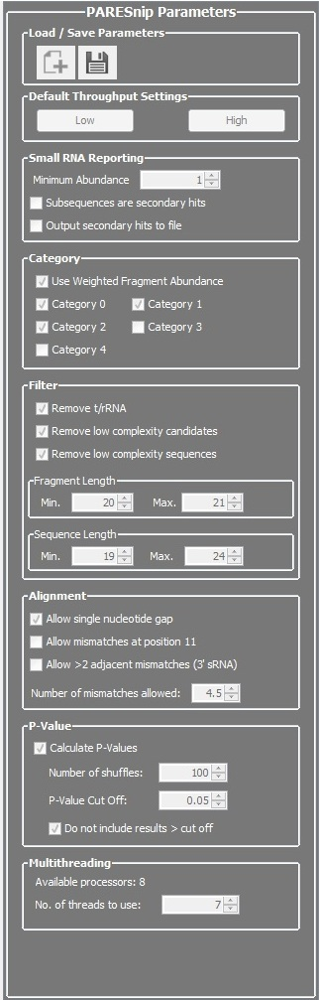

Run PAREsnip
Once the input files have been chosen the user can run PAREsnip. To change the default parameters, they can be updated in the tool's parameter browser. To show and hide the browser select the appropriate option from the Tool menu of the main Workbench window.The parameter browser and its settings:
|  |
Load/Save Parameters The parameters can be loaded from or saved to a text file. Default Throughput Settings Set the parameters to the low/high throughput defaults. Small RNA Reporting Targets will not be sought for any sRNA with an abundance less than the specified minimum. Whether to treat subsequences as secondary hits (example below). Whether to record secondary hits and output them to a file using the 'Save' or 'Save as' menu items. Category Whether to use the raw or weighted degradation fragment abundance when calculating the categories. Weighted fragment abundance is the raw fragment abundance divided by the number of times the fragment aligned to the transcriptome. A category will be included as potential sRNA cleavage sites when checked. Filter
When 'Calculate P-Values' is selected a p-value will be calculated for each reported interaction. The user can set the number of dinucleotide shuffles to be used in the calculation together with a threshold value, above which the calculation will not continue. If 'Do not include results > cut off' is selected then the interactions with p-values greater than the threshold will not be reported. Multithreading The number of CPUs is displayed and the number of threads to use for processing may be changed. More threads reduce the time taken to complete an analysis. |
'Subsequences are secondary hits' example
One sRNA sequence which hits a transcript cleavage site may also have several sRNA subsequences. A subsequence has the same nucleotide composition as its longer parent sequence, but has one or more fewer nucleotides (3' end). For example:| Parent sequence: | AGCTAGCTAGCTAGCTAGCTAGCT |
| Subsequence 1: | AGCTAGCTAGCTAGCTAGCTAGC |
| Subsequence 2: | AGCTAGCTAGCTAGCTAGCTAG |
| Subsequence 3: | AGCTAGCTAGCTAGCTAGCTA |
As subsequence 1, 2 and 3 can target the same cleavage site as the parent sequence, we call the subsequences secondary hits. It is not always required to independently report secondary hits as this unnecessarily inflates the number of results. Ticking this 'Subsequences are secondary hits' check-box ensures subsequences of hits are recorded as secondary hits, but not reported within the main output.
Starting the analysis
Once the parameters have been set the analysis can be started by selecting either the 'Start' menu item on the 'Run' menu or the 'Start' button on the form. Feedback is provided in the user-interface as the analysis progresses.Clicking the 'Cancel' button at any time will request the analysis to stop. There may be a brief pause before the calculation terminates.